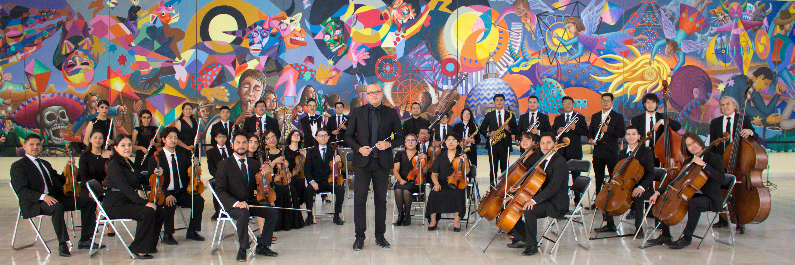
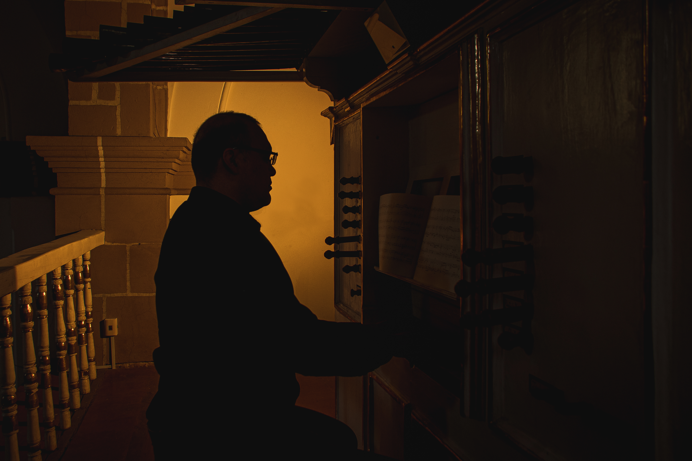
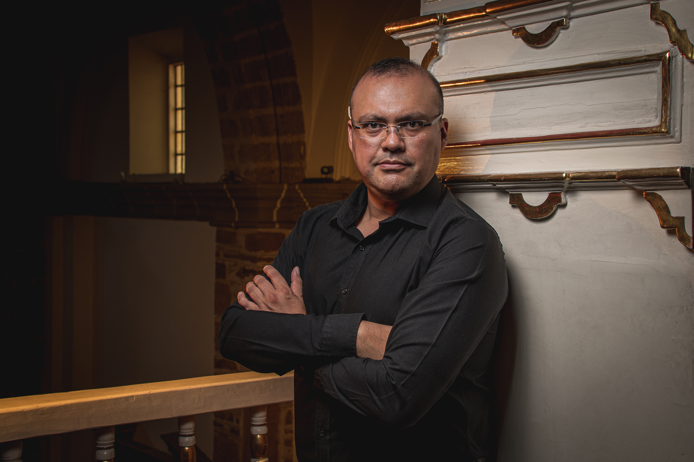
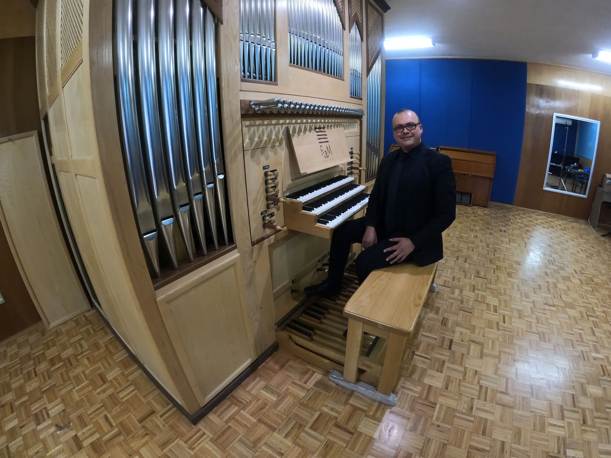
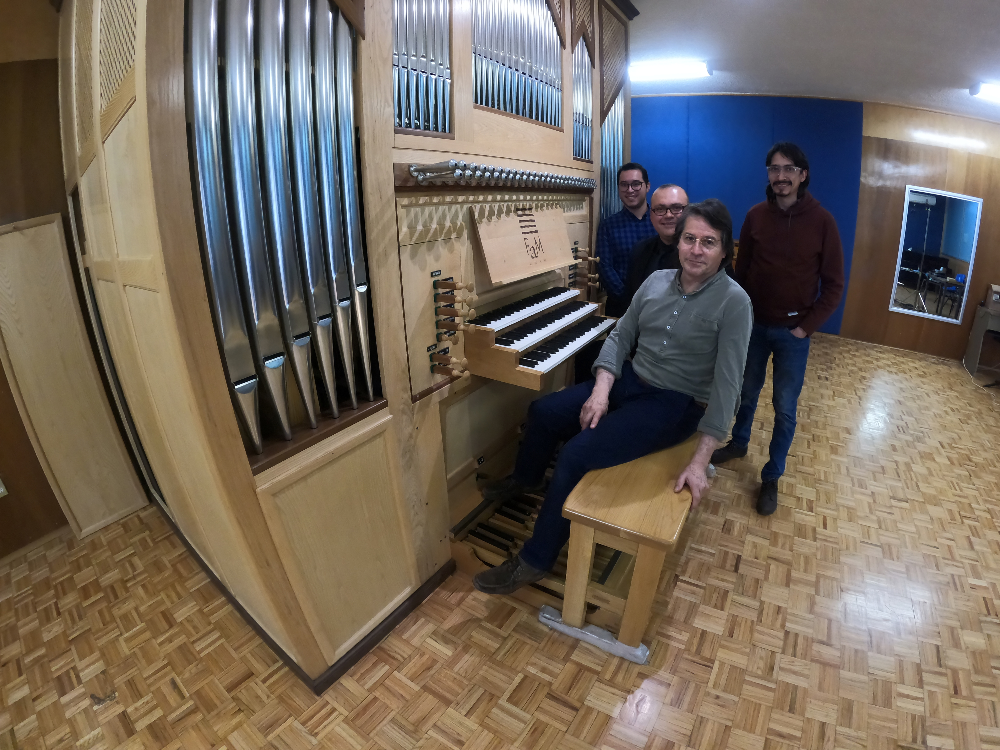

Tres vocacionesThree vocationsTrois vocationsTre vocazioni
Arte y OficioArt and CraftArt et MétierArte e Mestiere
ÓrganoOrganOrgueOrgano
Solista de vocación, intérprete de órganos históricos en catedrales y festivales de Europa, México y América. Primer lugar en el Concurso de Órgano Barroco "Guillermo Pinto" y laureado en el "José Nazarre" (2008). Estudió con Eric Lebrun en Saint-Maur-des-Fossés, Francia.A dedicated soloist and interpreter of historic organs in cathedrals and festivals throughout Europe, Mexico and the Americas. First prize at the "Guillermo Pinto" Baroque Organ Competition (2008). Studied with Eric Lebrun in France.Soliste et interprète d'orgues historiques en cathédrales et festivals en Europe, Mexique et Amériques. Premier prix au Concours "Guillermo Pinto" (2008).Solista e interprete di organi storici in cattedrali e festival in Europa, Messico e Americhe. Primo premio al Concorso "Guillermo Pinto" (2008).
ClavecínHarpsichordClavecinClavicembalo
Formado con Richard Siegel y Élisabeth Joyé en Saint-Maur-des-Fossés. Profesor de Clavecín del Conservatorio Nacional de Música (INBAL) desde 2023. Especialista en música de tecla del Barroco europeo y novohispano.Trained with Richard Siegel and Élisabeth Joyé. Harpsichord Professor at the National Conservatory of Music (INBAL) since 2023. Specialist in European and New Spanish Baroque keyboard music.Formé avec Richard Siegel et Élisabeth Joyé. Professeur de clavecin au Conservatoire National de Musique (INBAL) depuis 2023.Formatosi con Richard Siegel ed Élisabeth Joyé. Professore di Clavicembalo al Conservatorio Nazionale di Musica (INBAL) dal 2023.
DirecciónConductingDirectionDirezione
Ha dirigido la Sinfónica 5 de Mayo de Puebla y la Orquesta Estanislao Mejía de la FAM UNAM. Sus proyectos estables de dirección se presentan en la sección Proyectos.Has conducted Mexican orchestras including the Sinfónica 5 de Mayo de Puebla and the Orquesta Estanislao Mejía of FAM UNAM. His permanent conducting projects are presented in the Projects section.Il a dirigé des ensembles et orchestres au Mexique. Ses projets permanents de direction sont présentés dans la section Projets.Ha diretto ensemble e orchestre in Messico. I suoi progetti stabili di direzione sono presentati nella sezione Progetti.
Ver proyectos View projects Voir les projets Vedi progettiDirección artística Artistic direction Direction artistique Direzione artistica
Proyectos Projects Projets Progetti
Conservatorio Nacional de Música · INBAL
Orquesta BarrocaBaroque OrchestraOrchestre BaroqueOrchestra Barocca

Fundada en 2017 por Víctor Contreras, la Orquesta Barroca del Conservatorio Nacional de Música interpreta el repertorio del Barroco y el Clasicismo con criterios de interpretación históricamente informada, utilizando instrumentos de época o copias.
El ensemble se ha presentado en los foros más importantes de México, acercando el patrimonio musical de los siglos XVII y XVIII a nuevas audiencias y formando intérpretes especializados en la práctica histórica.
Founded in 2017 by Víctor Contreras, the Baroque Orchestra of the National Conservatory performs Baroque and Classical repertoire with historically informed practice, using period instruments or copies.
The ensemble has appeared at Mexico's most important venues, bringing the musical heritage of the 17th and 18th centuries to new audiences.
Fondé en 2017 par Víctor Contreras, l'Orchestre Baroque interprète le répertoire baroque et classique selon des pratiques historiquement informées, en utilisant des instruments d'époque ou des copies.
Fondata nel 2017 da Víctor Contreras, l'Orchestra Barocca esegue il repertorio barocco e classico con prassi esecutiva storicamente informata, utilizzando strumenti d'epoca o copie.
Tultepec, Estado de México
Orquesta Sinfónica JuvenilYouth Symphony OrchestraOrchestre Symphonique JeuneOrchestra Sinfonica Giovanile

La Orquesta Sinfónica y Coro Juvenil de Tultepec es un proyecto artístico y social único en el Estado de México, fundado y dirigido por Víctor Contreras. Con una base de 23 músicos de cuerdas que crece hasta 43 integrantes en sus conciertos sinfónicos, la orquesta representa el talento y la vocación musical de jóvenes tultepenses.
El ensemble ha actuado en los escenarios más prestigiosos del país: el Museo Soumaya, la Catedral Metropolitana, el Museo Nacional del Virreinato en Tepotzotlán y el Auditorio Silvestre Revueltas del Conservatorio Nacional de Música. Su repertorio abarca desde el Barroco hasta la música mexicana contemporánea.
The Youth Symphony Orchestra and Choir of Tultepec is a unique artistic and social project in the State of Mexico, founded and directed by Víctor Contreras. With a core of 23 string players growing to 43 for symphonic concerts, the orchestra represents the musical talent and vocation of young musicians from Tultepec.
The ensemble has performed at Mexico's most prestigious venues: Museo Soumaya, the Metropolitan Cathedral, the National Museum of the Viceroyalty in Tepotzotlán, and the Silvestre Revueltas Auditorium at the National Conservatory of Music.
L'Orchestre Symphonique et Chœur Jeune de Tultepec est un projet artistique et social unique dans l'État de Mexico, fondé et dirigé par Víctor Contreras. Avec un noyau de 23 musiciens qui croît jusqu'à 43 lors des concerts symphoniques, l'orchestre représente le talent musical de jeunes de Tultepec.
L'Orchestra Sinfonica e Coro Giovanile di Tultepec è un progetto artistico e sociale unico nello Stato del Messico, fondato e diretto da Víctor Contreras. Con un nucleo di 23 archi che cresce fino a 43 elementi nei concerti sinfonici, l'orchestra rappresenta il talento musicale dei giovani di Tultepec.
Linae Occultae · 2019
DiscografíaDiscographyDiscographieDiscografia
DEL SANTÍSIMO SACRAMENTO VÍCTOR CONTRERAS, órgano
Cuaderno de tonos de maitines de Sor María Clara del Santísimo Sacramento
Sor María Clara del Santísimo Sacramento
Grabado en 2019 para el sello discográfico italiano Linae Occultae, este álbum supone la primera grabación integral de una obra única en la historia de la música novohispana. Víctor Contreras rescató y dio vida al legado de la compositora Sor María Clara del Santísimo Sacramento, cuyas obras habían permanecido inéditas durante siglos.
En 2017, Víctor interpretó por primera vez de manera integral este Cuaderno en el Santuario de Nuestra Señora del Soviore, Monterosso al Mare, Liguria, Italia.
Recorded in 2019 for the Italian label Linae Occultae, this album represents the first complete recording of a unique work in the history of New Spanish music. Víctor Contreras rescued and brought to life the legacy of composer Sor María Clara del Santísimo Sacramento, whose works had remained unrecorded for centuries.
In 2017, Víctor gave the world premiere of the complete Cuaderno at the Sanctuary of Our Lady of Soviore in Monterosso al Mare, Liguria, Italy.
Enregistré en 2019 pour le label italien Linae Occultae, cet album constitue le premier enregistrement intégral d'une œuvre unique dans l'histoire de la musique néo-hispanique de Sor María Clara del Santísimo Sacramento.
Registrato nel 2019 per l'etichetta italiana Linae Occultae, questo album costituisce la prima registrazione integrale di un'opera unica nella storia della musica neoispana di Sor María Clara del Santísimo Sacramento.
MomentosMomentsMomentsMomenti
GaleríaGalleryGalerieGalleria




Tultepec, México